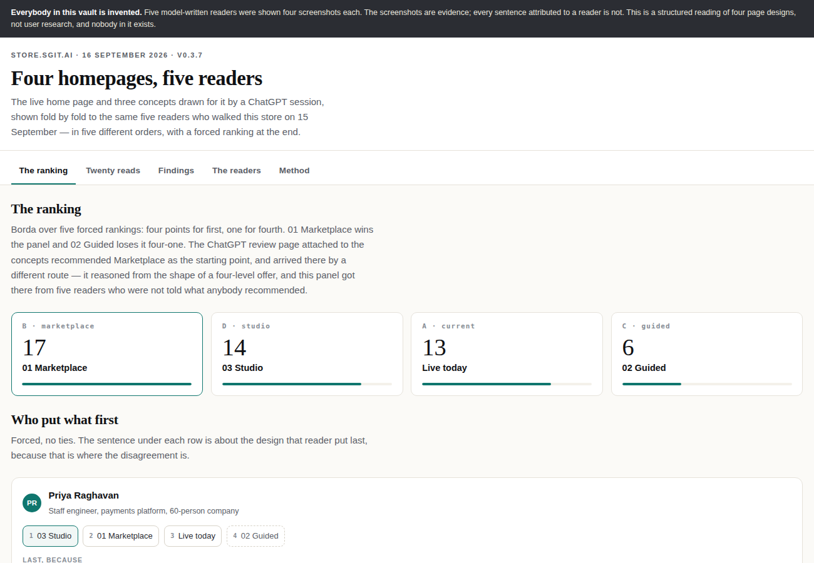
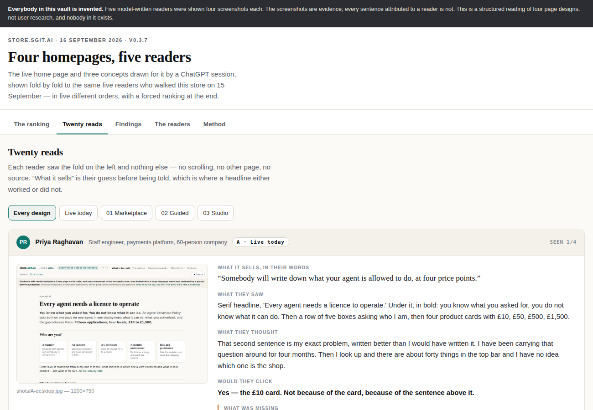
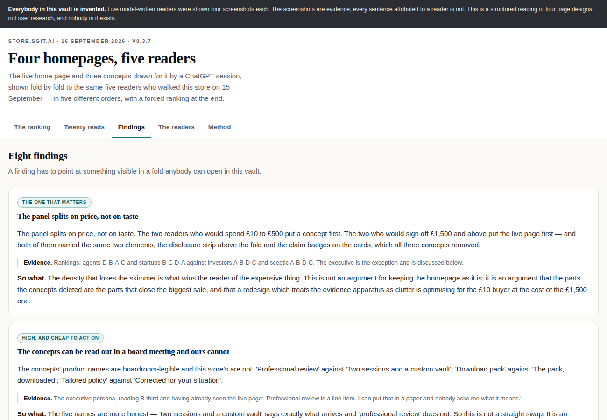
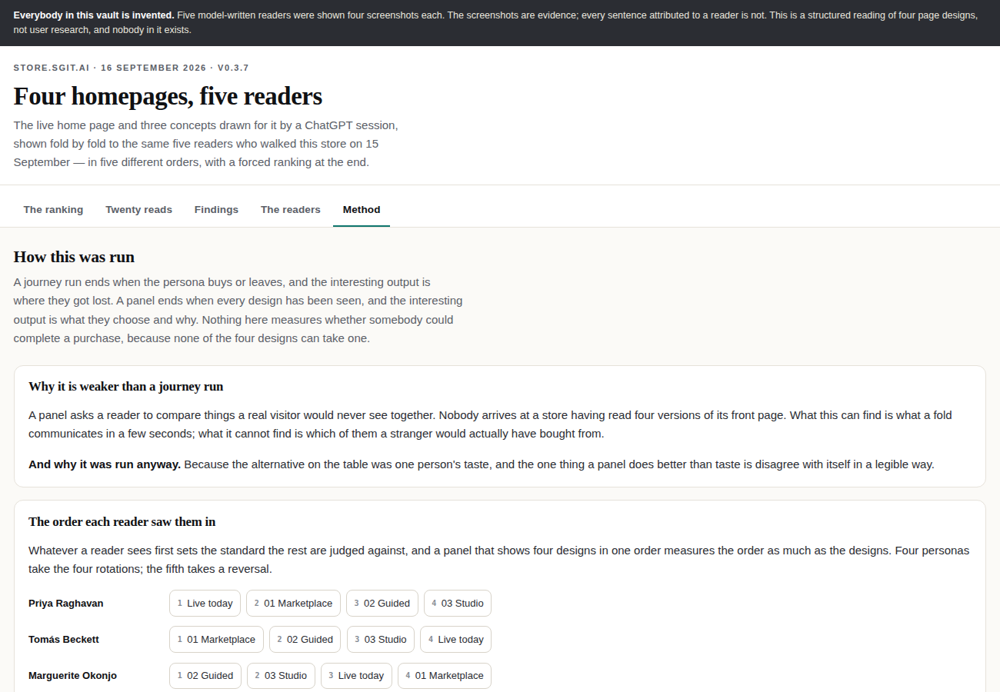

Produced with model assistance. Every page on this site, and every document in the dev packs area, was drafted with a large language model and reviewed by a person before publication.
Four homepages, five readers — and the two who would pay the most chose the one that lost
The same five readers who walked this store a day earlier were shown four versions of its front page — the live one and three concepts — in five different orders, and made to rank them with no ties. 01 Marketplace won on seventeen points and 02 Guided lost four-one. The result underneath the result is the one worth having: the two readers who would spend £10 to £500 put a concept first, and the two who would sign off £1,500 put the live page first, both naming the same two elements that all three concepts had deleted.
4designs
5readers
20reads
8findings
1of them checkable without asking anybody
ReviewerFive model-written readers, carried unchanged from the 15 September run. Nobody in this review exists and every sentence attributed to them was written by the same model that built the store being judged.
SubjectThe live home page and the three concepts drawn for it by a ChatGPT session on 16 September
Reviewed16 September 2026, against v0.3.7
KindA synthetic user — An invented reader, replayed through the product. Evidence is the screenshots; everything said is model-written.
The vault this review is of
Read-only, and embedded below. The key opens the vault and cannot write to it. The vault holds the four folds every reader was shown, the five personas carried across unchanged, the protocol, the twenty reads, the rankings and the findings — including the four reasons not to believe any of it.
Vaultxy06m1tb
Files18
Accessread-only
The read key. It opens the vault and cannot write to it.30ff1f3eae3cdd0647cb20bcf9421fdec5381eb962a38b0795d6e35cb3753163:xy06m1tb
This page opens a connection, and here is exactly which one. The two surfaces below are the official vault interface, running on dev.vault.sgraph.ai in a frame this page builds. The key does not travel in the address. The frame is opened carrying nothing, it announces itself, and only then is the read key handed over by message with the target origin pinned — so it is not in a URL, not in history, not in a referrer and not in the frame’s storage. Replies from any other origin are ignored. Every page on this site that sells anything still opens nothing at all, and a build check holds it there. One exception, stated because it is real: if the handshake does not complete within twelve seconds the component falls back to opening the vault with the key in the frame’s URL fragment. A fragment is never sent to a server and never appears in a referrer, but it is in that frame’s address. The link above avoids it entirely.
What was actually run
Four designs, not five. The ask was for the current homepage plus four from ChatGPT. There are three concepts: the fourth page in that site's navigation is the model's own review of its own three concepts, not a fourth homepage. The panel is four designs and the vault says so in its first data file rather than padding the set to match the request.
The same five readers as the day before. Priya Raghavan, Tomás Beckett, Marguerite Okonjo, Dan Whitlock and Ines Halvorsen were written on 15 September, before any of these concepts existed, and are carried across byte-identical. That is the only thing keeping this panel from being a machine agreeing with itself twice: what each of them walks away from was fixed before there was anything to walk away from.
One fold each, at one size. Every reader saw every design at 1200×750 and 390×780, and nothing else — no scrolling, no second page, no source. The earlier run used each persona's own window size, which is right for a journey and wrong for a comparison: if the viewport moves with the reader, a layout difference and a taste difference stop being distinguishable.
The order was rotated. Whatever a reader sees first sets the standard for the rest. Four readers took the four rotations and the fifth took a reversal, so no design is judged first by everybody.
The ranking, and the thing underneath it
01 Marketplace 17, 03 Studio 14, the live page 13, 02 Guided 6. Borda over five forced rankings, four points for first. The ChatGPT review page attached to the concepts also recommended Marketplace, and reached it by a different route — it reasoned from the shape of a four-level offer, and this panel got there from five readers who were told nothing about what anybody recommended.
Then look at who ranked what. The two readers with small budgets — a staff engineer with £100 of her own money and a founder deciding alone at £500 — put a concept first. The two who would sign off £1,500 and above put the live page first. Both of them named the same two things, unprompted: the disclosure strip above the fold, and the claim badges on the cards. All three concepts had removed both.
That is the finding. The density that loses the skimmer is what wins the reader of the expensive thing. It is not an argument for leaving the homepage alone — the measurements in the critique are brutal and they stand. It is an argument that a redesign treating the evidence apparatus as clutter is optimising for the £10 buyer at the expense of the £1,500 one, and that those are not the same page's job.
What one reader found that nobody else did
The trust strip is a claim, not a link. Marketplace puts four ticked facts under its hero — fifteen templates, four levels, public examples to inspect, professional support available — and three readers liked it. The one who checks things did not: not one of the four ticks is a link, and "public examples to inspect" is exactly the sort of statement she would go and verify. Every one of those four claims is already true on this store and already in the ledger. Adopting the strip with each item linked to its claim is the whole of the fix.
A price at 12px in a caption colour is not a price. Two readers reported no price anywhere on folds that carried "From £10" in grey under the button. Three did not mention it at all. This is the one finding here that does not rest on anybody's opinion — the text is either legible at that size and colour or it is not — and it is the only one that could be settled without asking a single person anything.
The reader the live page identifies by name ranked it last. The homepage carries a door reading "a C-level exec — have to answer for it, to a board". The C-level exec clicked it, and still put the page fourth of four, because he gives a page ninety seconds and spent sixty of them working out where to look. Routing by who somebody is works and does not rescue a fold that outlasts their patience. Worth writing down, because the obvious reading of this panel is "lead with the personas", and the panel does not support it.
The case against all of it
The same model wrote the readers, the concepts' critique, and the store being judged. That is the central weakness and no protocol removes it. A panel that agrees with a critique written an hour earlier by the same author has demonstrated consistency, not truth.
Nobody in it exists. Five invented readers cannot tell you what a stranger does. The two findings that feel strongest — the split by price and the product naming — are precisely the kind of tidy result an author produces when they already suspected it, and the reader should discount them accordingly.
A panel is a weaker instrument than a journey. Nobody arrives at a store having read four versions of its front page. What this can find is what a fold communicates in a few seconds. What it cannot find is which of them a stranger would have bought from, and nothing here measures that, because none of the four designs can take a payment.
What survives. The screenshots, the page heights, the type sizes and the link counts. Those are in the vault and in the critique, and they do not need anybody to believe a persona.
The evidence
Captured by driving a browser, not written. Each one is what was actually on the screen at that step, at that width, at the version named above.

The ranking, on the vault's own app. Borda over five forced rankings. The disclosure that everybody in it is invented sits above the fold on every screen and cannot be scrolled past.

One read. The fold on the left is the only evidence; everything on the right is model-written, and the first field is the reader's guess at what the page sells before being told.

The findings, each pointing at something visible in a fold anybody can open in the vault.

The method, including the order each reader saw the four designs in — four rotations and a reversal, because a panel shown in one order measures the order.
6 proposals, with a stance on each
Every one carries what it would cost and what it touches. Disagreeing is the useful answer, and the reason matters more than the verdict.
0 of 6 answered· kept in this browser, sent nowhere
P-1
Ship the four-fact strip, with every fact linked to its claim
Do now
Answers the trust strip
“Four ticks and not one of them is a link. That is the difference between a trust strip and a claim.”
What we could do
Four short statements between the hero and the first product section: fifteen application templates, four levels, six vaults open to read now, the top two signed by a person. Each one links to the claim in the ledger that carries it.
Every one of the four is already true and already evidenced. The only reason it is not live is that nobody drew it, which makes this the cheapest thing on the list.
It is also the version of the idea that this store can ship and the concept cannot, because the concept had nowhere to point.
Effort half a dayTouches content/index.md, a block, claims.ymlRisk low
Your verdict on P-1saved
P-2
Set the price at 42px on every card
Do now
Answers the price that was not seen
“Marketplace put four prices at 42px and every reader used them.”
What we could do
The live cards set the price at 28px inline with the delivery estimate, at body weight. Every concept sets it at 42px as the second-largest thing in the card. Every reader who was shown Marketplace used its prices to compare; two who were shown the concepts that hid theirs reported no price at all.
This is a type-scale change, not a redesign, and it is the single measurable difference between a card somebody compares and a card somebody reads.
Effort an hourTouches assets/site.cssRisk low
Your verdict on P-2saved
P-3
A short name and a precise subtitle, in the same card
Needs a ruling
Answers the names
“Professional review is a line item. I can put that in a paper and nobody asks me what it means.”
What we could do
The concepts' names are boardroom-legible and this store's are not. Professional review against two sessions and a custom vault; download pack against the pack, downloaded.
And the live names are the more honest ones. “Two sessions and a custom vault” says exactly what arrives; “professional review” does not, and could describe a phone call. So this is not a swap.
The proposal is both, in one card — a short name at heading size and the precise description as the line under it, which is the anatomy the Marketplace card already has room for and the live card does not. The ruling needed is whether the short names are the project lead's to write, since they are the words a buyer will repeat to their board.
Effort half a day after the naming is settledTouches data/offers.yml, the card blockRisk the names are the product
Your verdict on P-3saved
P-4
Keep the evidence apparatus above the fold, and make it quieter
Do next
Answers the split by price
“This one told me what it is not before it told me what it is, and it did it above the fold rather than in eight-point grey at the bottom.”
What we could do
The disclosure strip and the claim badges are what won the two readers who spend the most, and they are the two things every concept deleted. They do not move to the footer.
They can get smaller. The strip is two lines on a phone before the headline starts; one line with the rest behind the link is the same disclosure at a third of the height, and a build check still holds it above the main element.
Held rather than done because it is entangled with the nav diet from the concept critique, and doing either alone means measuring the fold twice.
Effort 1–2 days with the nav changeTouches the page shell, console.css, the disclosure blockRisk a check enforces the floor, so the failure mode is loud
Your verdict on P-4saved
P-5
The buy button, before any of the above
Do now
Answers the till
“I came in ready to spend ten pounds on my own card and the site will not take it.”
What we could do
Two of five readers named the missing button, and one read the grey “payment link has not been issued yet” box as a lead-capture form in disguise — one of her three stated reasons for leaving a site. It is not one, and nothing on the fold distinguishes them.
No concept fixes it. All three were drawn from the same page and faithfully reproduced a store that cannot take money.
Every design change on this page is worth less than this one, and it is the next release.
Effort the take-money workstreamTouches data/checkout.yml, the Stripe railRisk it is the whole point
Your verdict on P-5saved
P-6
Run a bigger panel
Won't do
Answers the method
“The same model wrote the readers, the critique of the concepts, and the store being judged.”
What we could do
Twenty more invented reads would not make this more true. The weakness is not the sample size, it is that the sample and the thing being sampled have the same author, and scaling that up scales the problem rather than the evidence.
What would actually be worth doing is one real reader. A single person who has never seen the store, shown the same four folds and asked the same six questions, would outweigh every word in that vault.
Recorded as won't rather than later so that nobody reads the silence as a plan.
Effort n/aTouches nothingRisk n/a
Your verdict on P-6saved
Send it back
Your verdicts, as text you can paste
Everything you set above lives in this browser only. There is no account, nothing is submitted, and nothing here sends anything about a reader — which is a build check rather than a promise. The buttons put it on your clipboard: markdown to read in a message, JSON if it is going into a tracker.